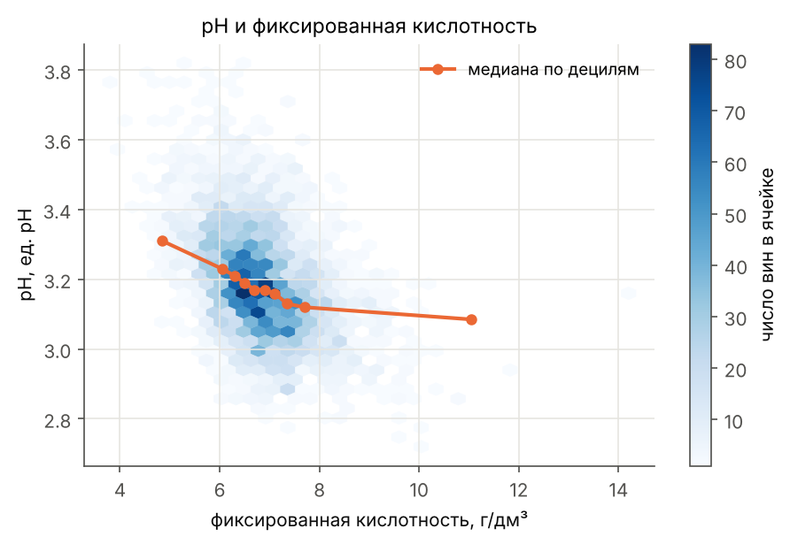

4898 образцов белого вина Vinho Verde (Cortez и др., 2009). У каждого лаборатория измерила 11 показателей. Мы взяли три: pH, фиксированную кислотность и содержание спирта. Даже по десяти остальным измерениям их нельзя предсказать точно: остаток модели во много раз больше шага прибора. Значит, это случайные величины.
Вино: три измерения, ни одно не вычисляется формулой
| Величина | Среднее | СКО | Асимметрия | Единицы |
|---|

Полное исследование: lab01.ipynb (автор раздела — Нефедьева Антонина, трек «Инфохимия»).
Датчик: случайное число, похожее на pH
Датчик берёт равномерное число U от 0 до 1 и превращает его в pH через обратную функцию распределения: X = F−1(U). Здесь F — эмпирическая функция распределения 4898 вин. Если базовый датчик хороший, гистограмма сгенерированных чисел ложится на гистограмму данных.
данные, 4898 виндатчик
Тройки чисел базового датчика в проекции (6uk+1 − 9uk) mod 1 по горизонтали и uk+2 по вертикали. У RANDU все точки ложатся на прямую: это его известный дефект.
Полная версия на marimo появится здесь после команды python tools/build_site.py.
В полной версии шесть методов (обратная функция, Бокс–Мюллер, полярный, метод отношений, метод Неймана, квантильный) для всех трёх величин и таблица сравнения: ktvd/datchik.py.
Шрифты: высота строчных и толщина штриха
Второй датасет мы собрали сами: шрифтовые семейства из Google Fonts (сейчас их 33), у каждого измерено начертание Regular прямо по контурам букв. Все размеры даны в долях кегля, то есть не зависят от размера, которым набран текст.

0,527медианная x-height гротесков
0,450медианная x-height антикв: строчные ниже, критерий Манна–Уитни это подтверждает
ρ = 0,58связь x-height и толщины штриха: чем выше строчные, тем толще штрих
Наведите на точку или выберите её клавишей Tab, чтобы увидеть название шрифта. Исследование: ktvd/fonts.ipynb.